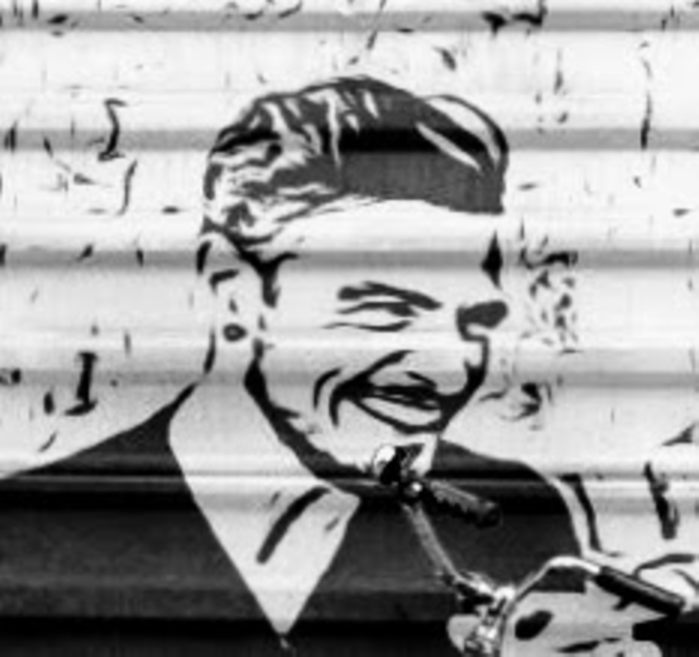
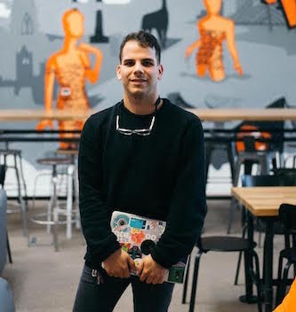

Conor; currently working in Google where I am a member of the policy team. I host some of our functions, work up new concepts for events and continue to develop our core values approach. Outside of Intertech I am very active on Dublin’s reading scene and am frequently found in a pub with a savoury book.

 Daniel "Hailing from Hungary, I had zero experience in LGBT+ activism until I got involved with Google's internal LGBT+ group in the run-up to the Marriage Equality Referendum. Though I have misgivings about corporate pinkwashing, I was impressed by how much we could achieve with the resources & the buy-in of an organisation like Google. Now I'm a member of various groups like the National LGBT Federation and InterTech – here, I’m a general dogsbody and occasional public speaker. Outside of work I try to keep up with Pitchfork, and with gigs in Dublin."
Danielle works at LinkedIn where she manages a team of Customer Success Managers. She co-founded InterTech Ireland back in 2014 and she is now acting as our Co-Chair. "I love how we bring our community together; we work hard in creating events that are both educational and fun!".
 Humberto; currently enjoy working in Zalando, where I am a data scientist. In intertech I look after this website, do some our branding and share some news you like in our social media channels. Outside intertech I am very active in the Dublin tech meetup supace and I do collage.
Ricardo works for LinkedIn where he's a Sr. Strategic Support Partner. He co-founded InterTech Ireland back in 2014 and is the co-chair for out@in (the LinkedIn LGBT+ ERG). Ricardo truly believes in the power of our community and that every little that we all do helps to shape the world for future generations.
Sivan co-founded Intertech Ireland back in 2014. She is one of our co-chairs and she ocasionally host our events.
"Made in Israel, currently Dubliner. Working in Airbnb as a trip Manager and love it!; Traveller, foodie and VERY passionate about people, diversity, and inclusion in and out of the workplace".